| 日付 | 2012年11月24日（土） |
|---|---|
| 山域 | 丹沢 |
| メンバー | 家族（妻、長女・1歳） |
| 山行形態 | 子連れ日帰り |
| アクセス | 車 |
| ルート (Map) | 長谷寺駐車場 (9:56) - (11:45) 白山 (12:40) - (13:15) 長谷寺駐車場 |
1か月以上山に行ってなかったため、久しぶりに山に行ってみることにする。
あまり長い行程の山は無理なため、
30分程度で山頂に立てる丹沢の白山を選択。
今回は子供用のキャリアを持ってこず、歩かせてみることにする。
子供にとっては初めての山登りだ。
白山の麓にある長谷寺に続く石段から少し進んだところの広場に車を停める。標高90m。
歩いて少し車道を下る。この辺りは紅葉が美しい。
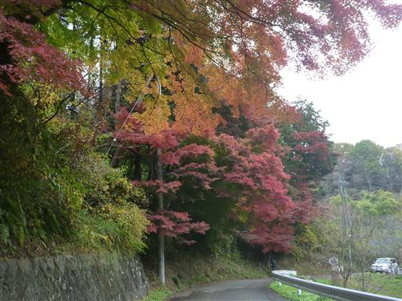
石段の入口に到着。ここからゆっくりと登っていく。
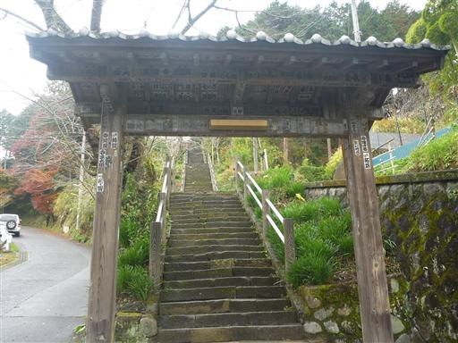
階段を登りきった先に立派な駐車場を発見。車を停めるのが少し早すぎたようだ。
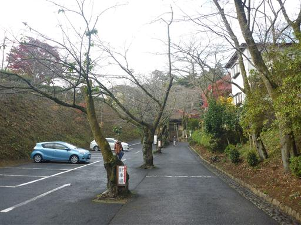
駐車場の脇には見事なモミジの紅葉が見られる。
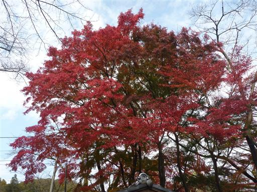
立派な門を潜って階段を登っていく。
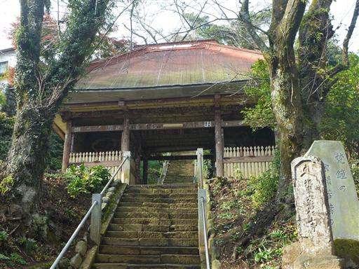
門には仁王像が立っている。
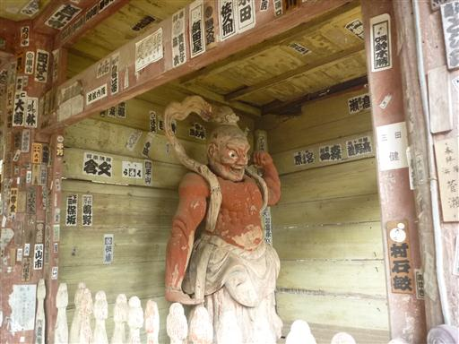
椿の花びらが地面に積もっている。一面ピンク色でなかなか美しい。
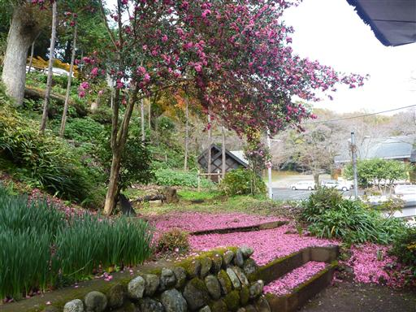
手洗い場で手を清める。
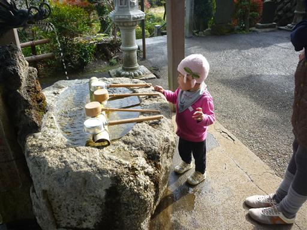
長谷寺に到着。お参りした後、売店で交通安全の御守を購入する。
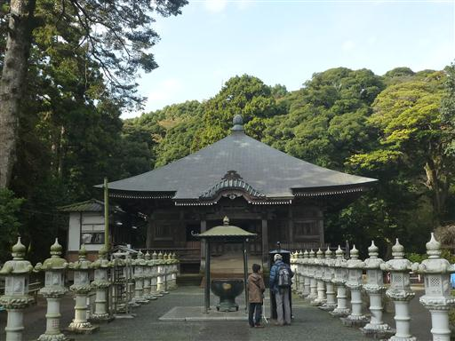
寺の裏から登山道は始まる。
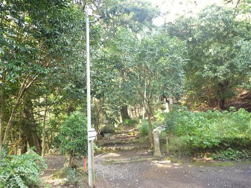
男坂と女坂の分岐点。
子供の短い足では急坂を下るのが難しいと思い登りに男坂、下りに女坂を歩くことにする。
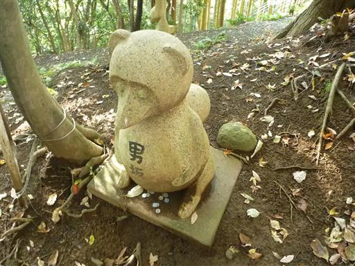
手をつないで木段を登っていく。一段一段が大きくて少々登りにくそうだ。
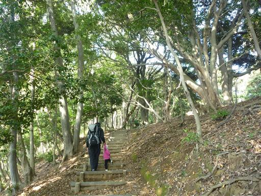
6～7割ほど登ったところで登るのを嫌がりだして「抱っこ」とせがんでくる。
何とか励まして登ろうとするが、10段登るのに20分ほどかかり全く進まない。
このままでは日が暮れてしまうので、しかたなく抱っこして山頂まで行くことにする。
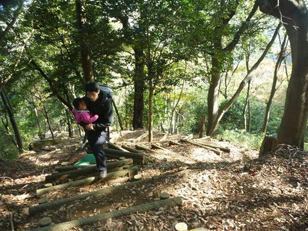
男坂というだけあって坂は急で、確かに登りにくい。女坂を登りに使うべきだった。
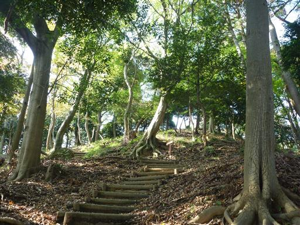
稜線に到着する。真中で折れそうな形の大木が立っている。
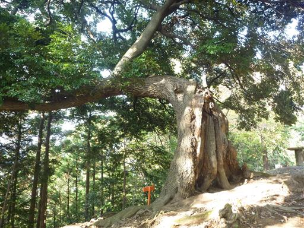
平坦な道を少し歩けば白山山頂だ。
歩きやすくなったので子供を下ろしたが、歩くのは嫌らしく、ぐずぐず言いながら歩いている。
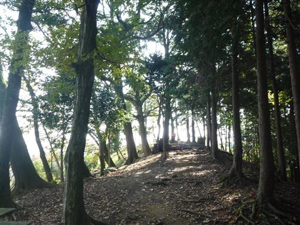
白山山頂に到着。標高284m。
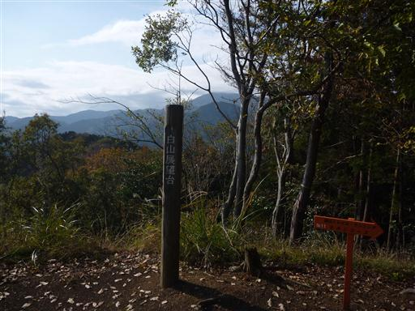
山頂には小さな展望台がある。
今までぐずついていたくせに、展望台の階段は嬉々として登ったり下りたりしている…
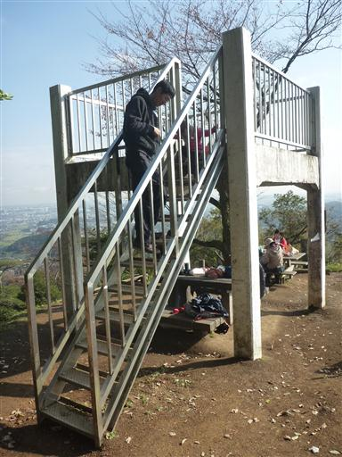
展望台からの眺め。
東丹沢の山並が見えるが、残念ながら大山には少し雲がかかっている。
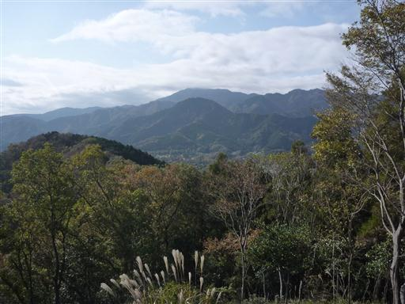
こちらは平野部の眺め。遠く横浜まで望むことができる。
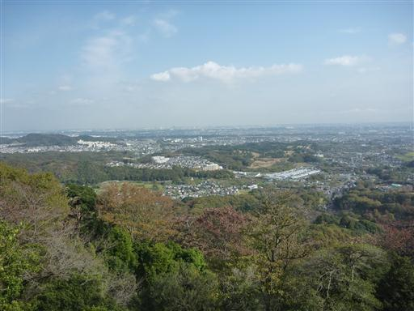
山頂で昼食をとって下山開始。
下山も最初の数分は歩いて下っていたが、途中で抱っこをせがまれる。
面倒なので抱っこして下山。
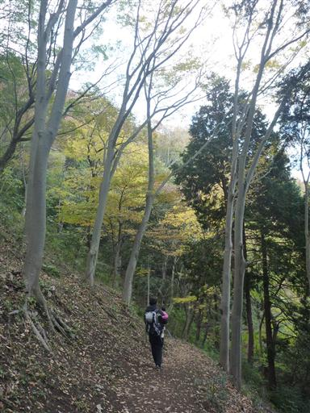
女坂を下ってモミジの木のある場所まで戻ってくる。
最後の寺の石段は抱っこから下りて歩いて下っていたため、疲れたというより山道が嫌いなのかもしれない。
短い行程の山なので最後まで歩けると思っていたが、残念無念な結果となった初登りだった。
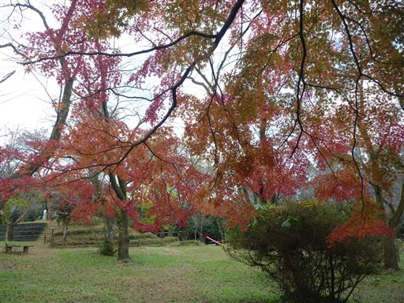